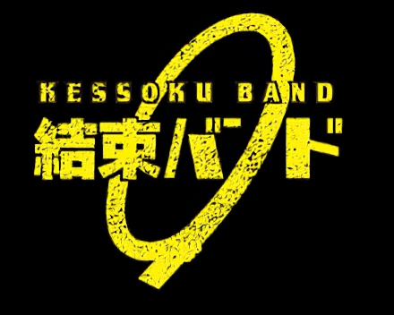

选场驻地- 选择了东京和大阪这两个人口众多、亚文化流行，消费力强的城市进行演出，可以最大化地吸引潜在听众和粉丝的关注，是符合经济效益与营销效果的最佳方案。
演出时间- 在5月21日周末晚上举办演出，这不仅有利于大众群体，如学生和上班族的参与，同时也是为了避免下班时段交通拥堵问题，让观众能够更轻松方便地到达现场。
宣传推广-
在演出前进行了大量的预热，推广宣传，包括YouTube、Twitter等社交媒体的活动预告、粉丝互动等，以及线上和线下的各种广告宣传和海报张贴，逐渐不断提高观众的关注度和期待值。
歌单规划- 演出歌单的设计上比较合理，包含了一些经典op，ed原创歌曲以及剧中衍生曲，同时还有新专辑中的新歌，既满足了粉丝的期待，也让更多的听众了解到了该乐队的音乐作品。
舞台和灯光设计- 现场舞台和灯光设计相对简约，但依然能够增强歌曲表演的氛围和气氛，更好地展现孤独摇滚的音乐特色和风格。
现场节目互动- 现场有一些互动环节，包括与观众的问答、照片留念等，这些互动节目可以增加现场氛围和参与感，也是与粉丝建立联系的重要环节之一。